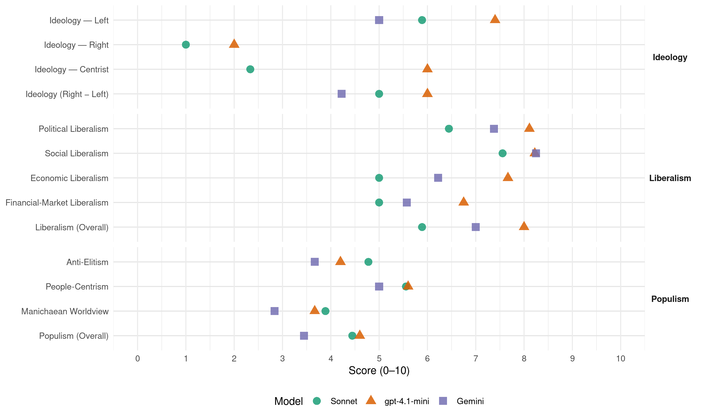

ALP (Australia, 2016)
manifesto_id 63320_201607
Get full text: This site shows derived annotations and short verbatim quotes only. The full manifesto text is © Manifesto Project / WZB — obtain it via manifesto-project.wzb.eu using the manifesto_id above.
Headline scores
| Dimension | Sonnet | gpt-4.1-mini | Gemini |
|---|---|---|---|
| Populism (Overall) | 4.4 | 4.6 | 3.4 |
| Anti-Elitism | 4.8 | 4.2 | 3.7 |
| People-Centrism | 5.6 | 5.6 | 5.0 |
| Manichaean Worldview | 3.9 | 3.7 | 2.8 |
| Ideology (Right − Left) | 5.0 | 6.0 | 4.2 |
| Liberalism (Overall) | 5.9 | 8.0 | 7.0 |
| Political Liberalism | 6.4 | 8.1 | 7.4 |
| Social Liberalism | 7.6 | 8.2 | 8.2 |
| Economic Liberalism | 5.0 | 7.7 | 6.2 |
| Financial-Market Liberalism | 5.0 | 6.8 | 5.6 |
Evidence per dimension
Economic Liberalism
Gemini · score 5.0 · verified · chunk 1
“tax cut for multinational companies”
and not proceeding with the tax cut for multinational companies.
Gemini · score 6.0 · verified · chunk 2
“mobilise private sector finance through a range”
Under a Shorten Labor Government, Infrastructure Australia will be given a new Financing Mandate that will mobilise private sector finance through a range of instruments including loans, loan guarantees and equity investments.
Gemini · score 7.0 · verified · chunk 3
“promote competition in small business lending”
easier for potential new small business owners to access to finance and promote competition in small business lending.
Gemini · score 7.0 · verified · chunk 4
“deter and punish anti-competitive and anti-consumer conduct”
Giving the Consumer Watchdog More Teeth This policy suite is designed to deter and punish anti-competitive and anti-consumer conduct by increasing penalties, using some of
Gemini · score 7.0 · verified · chunk 5
“negotiate high-quality international trade agreements”
A Shorten Labor Government will negotiate high-quality international trade agreements that open up new
Gemini · score 6.0 · verified · chunk 6
“reward small businesses that are creating jobs”
BACKING SMALL BUSINESS TO CREATE LOCAL JOBS A Shorten Labor Government will reward small businesses that are creating jobs and getting Australian jobseekers back
Gemini · score 6.0 · verified · chunk 7
“reward small businesses that are creating jobs”
A Shorten Labor Government will reward small businesses that are creating jobs and getting Australian
Gemini · score 6.0 · verified · chunk 8
“seek high quality international trade agreements to improve market access”
That’s why a Shorten Labor Government will continue to seek high quality international trade agreements to improve market access for Australian exporters. But governments
Gemini · score 6.0 · verified · chunk 9
“keeping red tape in check”
strikes the right balance between maintaining the strength of the screening system and keeping red tape in check.
gpt-4.1-mini · score 8.0 · verified · chunk 1
“Labor wants every child to have the same chance of succeeding at school, and in life, as any other child in the country”
No matter what their background, no matter where they live - city, suburb or in the regions – no matter what type of school they go to – Government, Catholic or Independent, Labor wants every child to have the same chance of succeeding at school, and in life, as any other child in the country.
gpt-4.1-mini · score 8.0 · verified · chunk 2
“Labor will create a Regional Innovation Fund”
Labor will create a Regional Innovation Fund, which will kickstart a range of initiatives to expand the role of Australia’s regions in contribution to the national innovation effort. It will, for example, invest in an expansion of the network of hubs and accelerators across the country, focussing on regional and rural sites.
gpt-4.1-mini · score 8.0 · verified · chunk 3
“supporting innovation and startups”
Labor will drive jobs and innovation through tax relief and support for startups. Helping small business – Labor will deliver tax cuts to small businesses while putting them on a more even playing field when it comes to competing in the marketplace.
gpt-4.1-mini · score 7.0 · verified · chunk 4
“Labor will strengthen the budget over the medium term through a fairer tax system and reducing tax concessions like negative gearing and capital gains”
That is why an elected Shorten Labor Government will strengthen the budget over the medium term through a fairer tax system and reducing tax concessions like negative gearing and capital gains. Our responsible savings and structural reforms will steadily and permanently improve the budget bottom line, making room for critical investments in Medicare, education and infrastructure.
gpt-4.1-mini · score 8.0 · verified · chunk 5
“Labor will negotiate high-quality international trade agreements that open up new export markets”
A Shorten Labor Government will negotiate high-quality international trade agreements that open up new export markets by reducing tariffs, quotas and “behind the border” barriers to trade.
gpt-4.1-mini · score 8.0 · verified · chunk 6
“Labor will build the infrastructure that Western Australia needs to create jobs and drive growth”
Labor has developed more than 100 positive policies to achieve just that. Labor’s plan will build the infrastructure that Western Australia needs to create jobs and drive growth.
gpt-4.1-mini · score 7.0 · verified · chunk 7
“Labor will invest in the job-creating infrastructure that will create jobs”
Labor is investing in the infrastructure that will create jobs and drive the Central Coast’s economy for the next generation.
gpt-4.1-mini · score 7.0 · verified · chunk 8
“co-investing in early stage and high potential companies”
…Backing in great ideas through co-investing in early stage and high potential companies through the $500 million Smart Investment Fund. Bringing together the superannuation, venture capital and startup sectors in an Innovation Investment Partnership to identify barriers holding back investment in Australian-based venture capital funds and early-stage enterprises.
gpt-4.1-mini · score 8.0 · verified · chunk 9
“Labor will support more producers and manufacturers to deliver product innovation”
value-added dairy products and marbled wagyu in which the fat is relatively healthy. There is an opportunity for our fibre producers to do likewise by developing innovative, high quality materials for specialist applications like defence and industry. That is why Labor will support more producers and manufacturers to deliver product innovation through our Food, Fibre and Advanced Materials Modernisation Grants program. This competitive merit-based grants program will match investments by producers and manufacturers in projects to improve the efficiency of their operations and increase investment in innovation and new technologies, including energy efficient capital equipment and low emissions technologies. These grants are a direct response to industry concerns about the difficulty in accessing finance to invest in capital improvements to production and manufacturing facilities that lower costs and improve the competitiveness of Australian industries.
Sonnet · score 5.0 · mixed · chunk 1
“failure in the market and we have seen the proliferation”
Over the last year it has become clear that there has been a failure in the market and we have seen the proliferation of opportunistic and sub-standard training providers costing the taxpayers and students millions of dollars.
Sonnet · score 6.0 · mixed · chunk 2
“demand driven system similar to a marketplace”
With the demand driven system similar to a marketplace for students and course offerings, government should ensure that students are well-informed consumers.
Sonnet · score 6.0 · verified · chunk 3
“tax cuts to small businesses”
Helping small business – Labor will deliver tax cuts to small businesses while putting them on a more even playing field when it comes to competing in the marketplace.
Sonnet · score 5.0 · verified · chunk 4
“tax cuts to small businesses”
Helping small business – Labor will deliver tax cuts to small businesses while putting them on a more even playing field when it comes to competing in the marketplace
Sonnet · score 5.0 · mixed · chunk 5
“reducing tariffs, quotas and”behind the border” barriers”
open up new export markets by reducing tariffs, quotas and “behind the border” barriers to trade. We will do so while maintaining Australia’s right to adopt sound public policies
Sonnet · score 4.0 · verified · chunk 6
“tax cut to big business”
Liberals’ plan for another round of harsh and unfair cuts – all so Malcolm Turnbull can give a tax cut to big business.
Sonnet · score 4.0 · verified · chunk 7
“tax cut to big business”
Liberals’ plan for another round of harsh and unfair cuts – all so Malcolm Turnbull can give a tax cut to big business
Sonnet · score 5.0 · mixed · chunk 8
“barriers holding back investment”
Innovation Investment Partnership to identify barriers holding back investment in Australian-based venture capital funds and early-stage enterprises.
Sonnet · score 6.0 · verified · chunk 9
“competitive merit-based grants program”
This competitive merit-based grants program will match investments by producers and manufacturers in projects to improve the efficiency of their operations
Financial-Market Liberalism
Gemini · score 6.0 · verified · chunk 2
“mobilise private sector finance through a range”
Under a Shorten Labor Government, Infrastructure Australia will be given a new Financing Mandate that will mobilise private sector finance through a range of instruments including loans, loan guarantees and equity investments.
Gemini · score 7.0 · verified · chunk 3
“Comprehensive Credit Reporting is about sharing positive”
using personal housing as collateral, is becoming more and more difficult for young people with a new idea. This is why Labor wants to make it easier for potential new small business owners to access to finance and promote competition in small business lending. We already know how important information is when making investment decisions. Comprehensive Credit Reporting is about sharing positive client information to allow financial lenders to make better decisions.
Gemini · score 5.0 · verified · chunk 4
“Royal Commission into misconduct in the banking and financial services industry”
Enough is enough. That is why a Shorten Labor Government will hold a Royal Commission into misconduct in the banking and financial services industry. This is an important
Gemini · score 5.0 · verified · chunk 5
“Advocate for leniency by lending institutions”
until March 2017. Advocate for leniency by lending institutions with respect to business
Gemini · score 5.0 · verified · chunk 6
“leniency by lending institutions with respect to business”
affected sites across the country, establishing baseline readings to allow for ongoing monitoring of contaminant exposure. At Williamtown, a Shorten Labor Government will: Improve community consultation by establishing a local community liaison officer at RAAF Base Williamtown, ensuring the community has a single point of contact — if you want to speak to Defence, you’ll know who to contact. Fund a study to analyse the impact of perfluorinated chemical contamination on the Williamtown community. Provide a grant to the NSW Government to connect affected properties within the Williamtown investigation area to town water, as identified by the NSW EPA. Extend income support for affected commercial fishers until March 2017. Advocate for leniency by lending institutions with respect to business and home loan repayments
Gemini · score 6.0 · verified · chunk 8
“venture capital and startup sectors in an Innovation Investment Partnership”
Bringing together the superannuation, venture capital and startup sectors in an Innovation Investment Partnership to identify barriers holding back investment
Gemini · score 5.0 · verified · chunk 9
“difficulty in accessing finance to invest”
direct response to industry concerns about the difficulty in accessing finance to invest in capital improvements to production
gpt-4.1-mini · score 7.0 · verified · chunk 3
“helping small business access finance”
Labor will work with the banks and finance industry to develop StartUp Finance, a partial guarantee scheme which will improve access to finance for Australian micro-businesses.
gpt-4.1-mini · score 6.0 · verified · chunk 4
“A Shorten Labor Government will hold a Royal Commission into misconduct in the banking and financial services industry”
That is why a Shorten Labor Government will hold a Royal Commission into misconduct in the banking and financial services industry. This is an important decision that was not taken lightly – it has been made after careful consideration over an extended period of time.
gpt-4.1-mini · score 7.0 · verified · chunk 5
“Labor will legislate for an independent evaluation of Australia’s aid program”
Legislate for an independent evaluation of Australia’s aid program, as well as the measurement and reporting of effectiveness. Over the next four years, Labor will provide around $800 million more for overseas aid than the Liberals.
gpt-4.1-mini · score 7.0 · verified · chunk 8
“Improving access to finance for startups and micro-businesses”
…Improving access to finance for startups and micro-businesses through a partial guarantee scheme, Startup Finance. Getting startups to help solve government problems through Challenge Platforms and support startups to compete in government tenders.
Sonnet · score 6.0 · verified · chunk 2
“loans, loan guarantees and equity investments”
Infrastructure Australia will have a $10 billion financing facility to deploy a combination of guarantees, loans or equity to get new projects started.
Sonnet · score 6.0 · verified · chunk 3
“promote competition in small business lending”
Comprehensive Credit Reporting is about sharing positive client information to allow financial lenders to make better decisions… will promote competition for small business financing in the banking sector.
Sonnet · score 5.0 · verified · chunk 4
“Royal Commission into misconduct in the banking”
a Shorten Labor Government will hold a Royal Commission into misconduct in the banking and financial services industry
Sonnet · score 4.0 · verified · chunk 5
“limit negative gearing to new property”
From 1 July 2017, Labor will limit negative gearing to new property. This is a significant policy that will provide an incentive for new construction.
Sonnet · score 4.0 · verified · chunk 6
“credit card and not your Medicare Card”
where it is your credit card and not your Medicare Card that determines the quality of your health care.
Sonnet · score 5.0 · verified · chunk 7
“access to finance for startups”
Improving access to finance for startups and micro-businesses through a partial guarantee scheme, Startup Finance
Sonnet · score 5.0 · verified · chunk 8
“Improving access to finance for startups”
Improving access to finance for startups and micro-businesses through a partial guarantee scheme, Startup Finance.
Sonnet · score 5.0 · verified · chunk 9
“difficulty in accessing finance to invest”
These grants are a direct response to industry concerns about the difficulty in accessing finance to invest in capital improvements to production and manufacturing facilities
Political Liberalism
Gemini · score 7.0 · verified · chunk 1
“rights protected”
participate in the community and have their rights protected. We believe Australians
Gemini · score 7.0 · verified · chunk 2
“independent authority at the centre of monetary”
Just as the Reserve Bank of Australia is the independent authority at the centre of monetary policy, Infrastructure
Gemini · score 8.0 · verified · chunk 3
“fundamental democratic rights to representation”
Workers have fundamental democratic rights to representation in the workplace, to freedom of association
Gemini · score 8.0 · verified · chunk 4
“expand the mandate of the independent Parliamentary Budget Office”
Charter of Budget Honesty requirements and debased budget documents for their own political gain. That is why Labor will strengthen Australia’s budget framework and move towards international best practice by expanding the mandate of the independent Parliamentary Budget Office to ensure greater confidence
Gemini · score 8.0 · verified · chunk 5
“upholding the democratic rights and freedoms”
ensure our nation’s security while upholding the democratic rights and freedoms that Australians have for
Gemini · score 7.0 · verified · chunk 6
“legislate for transparency and accountability”
overseas aid. And we will legislate for transparency and accountability to improve aid effectiveness. Thanks to decisions
Gemini · score 7.0 · verified · chunk 7
“legally entitled to cooperatively negotiate”
ADF personnel are not legally entitled to cooperatively negotiate their pay, conditions and terms
Gemini · score 7.0 · verified · chunk 9
“creating a transparent register of its own”
Abbott-Turnbull Government broke an election promise to match this by creating a transparent register of its own.
gpt-4.1-mini · score 9.0 · verified · chunk 1
“Labor will ensure that access to health care is determined by your Medicare card, and not your credit card”
A Shorten Labor Government will ensure that access to health care is determined by your Medicare card, and not your credit card, and will reverse the Turnbull Government’s GP Tax by stealth. Nobody wants to head down the same path as America when it comes to our health system.
gpt-4.1-mini · score 8.0 · verified · chunk 2
“Labor will legislate the Student Funding Guarantee”
Labor will continue the demand driven system and ensure that access to university remains a matter of hard work and good marks, not your bank balance. A Shorten Labor Government will introduce a new Student Funding Guarantee to provide certainty to universities and remove the need for higher fees. Labor will legislate the Student Funding Guarantee, and index the funding to ensure the value of the contribution isn’t eroded over time.
gpt-4.1-mini · score 8.0 · verified · chunk 3
“strengthen the budget through a fairer tax system”
Labor’s fiscal plan is responsible and fair. Labor will not smash the family budget to fix the Liberal Government’s mess. Labor’s approach to fiscal policy has been guided by two objectives: funding important investments in the near term, and implementing the structural improvements required to strengthen the budget over the medium term.
gpt-4.1-mini · score 8.0 · verified · chunk 4
“Labor will strengthen Australia’s budget framework and move towards international best practice by expanding the mandate of the independent Parliamentary Budget Office”
That is why Labor will strengthen Australia’s budget framework and move towards international best practice by expanding the mandate of the independent Parliamentary Budget Office to ensure greater confidence and independence in economic and fiscal decision-making.
gpt-4.1-mini · score 8.0 · verified · chunk 5
“Prime Minister to deliver an annual Family Violence Statement to Parliament”
A Shorten Labor Government will give the issue of family violence national prominence, with the Prime Minister to deliver an annual Family Violence Statement to Parliament. This is part of Labor’s latest measures aimed at ending the scourge of family violence in our community.
gpt-4.1-mini · score 9.0 · verified · chunk 6
“Labor will protect Medicare and ensure our world class universal health care system”
By contrast, Labor has a positive plan to protect Medicare and ensure our world class universal health care system continues to deliver good health outcomes for the Central Coast into the future.
gpt-4.1-mini · score 8.0 · verified · chunk 7
“Labor will reverse the Government’s freeze on the Medicare Benefits Schedule”
Labor will reverse the Government’s freeze on the Medicare Benefits Schedule. This means an average family in Victoria with two children will be more than $400 better off.
gpt-4.1-mini · score 8.0 · verified · chunk 8
“A healthcare system underpinned by Medicare”
…Labor’s team has remained united, with a single-minded commitment to deliver those policies that put people first. A healthcare system underpinned by Medicare. An education system that gives every child in every school more individual attention – Public, Catholic or Independent.
gpt-4.1-mini · score 7.0 · verified · chunk 9
“Labor will restore consistency in screening thresholds”
will undermine, rather than build, the public support that is essential to making foreign investment work. That is why Labor will restore consistency in screening thresholds by bringing all agricultural land application thresholds into line with those in our trade agreements with Thailand and Singapore. This $50 million threshold strikes the right balance between maintaining the strength of the screening system and keeping red tape in check. We will also review the current regime’s discriminatory treatment of investments in non-sensitive sectors by investors from Singapore, Thailand and non-FTA trading partners and the treatment of agricultural land. Furthermore, a Shorten Labor Government will make the foreign land investment register public so that every Australian can see who is buying agricultural land, and where. Labor started work on this register when last in office, but this has not been delivered because the Abbott-Turnbull Government broke an election promise to match this by creating a transparent register of its own. Trade, exports and foreign investment represent huge opportunities to grow jobs and make Australia’s regions more prosperous. Labor will put the right rules and structures in place to ensure regional Australians benefit, while protecting our environment and resources in the process.
Sonnet · score 6.0 · verified · chunk 1
“transparency and accountability for this funding”
Of course, we will expect transparency and accountability for this funding – with clear links to improved teaching and learning.
Sonnet · score 7.0 · verified · chunk 2
“independent Higher Education Productivity and Performance Commission”
Labor will establish an independent Higher Education Productivity and Performance Commission to drive these labour market outcomes.
Sonnet · score 7.0 · verified · chunk 3
“greater transparency and independence in our national budgeting”
it is time for Australia to put in place new rules to ensure greater transparency and independence in our national budgeting. Labor will give the independent Parliamentary Budget Office an enhanced role
Sonnet · score 7.0 · verified · chunk 4
“expanding the mandate of the independent Parliamentary Budget Office”
Labor will strengthen Australia’s budget framework and move towards international best practice by expanding the mandate of the independent Parliamentary Budget Office to ensure greater confidence and independence
Sonnet · score 7.0 · verified · chunk 5
“democratic rights and freedoms all Australians cherish”
striking the right balance between national security considerations and the fundamental democratic rights and freedoms all Australians cherish.
Sonnet · score 6.0 · verified · chunk 6
“independent oversight of facilities”
Labor will restore the faith of Australians in our onshore and offshore processing networks by providing independent oversight of facilities
Sonnet · score 6.0 · verified · chunk 7
“independent oversight of facilities”
Labor will restore the faith of Australians in our onshore and offshore processing networks by providing independent oversight of facilities
Sonnet · score 6.0 · verified · chunk 8
“working in a meaningful partnership with Indigenous”
unlike the Liberals – Labor is committed to working in a meaningful partnership with Indigenous Australians to close the gap
Sonnet · score 6.0 · verified · chunk 9
“more transparency and accountability”
Review the Exporter Supply Chain Assurance System. Provide more transparency and accountability. Ban animal testing for cosmetics
Liberalism (Overall)
Gemini · score 7.0 · verified · chunk 1
“rights protected”
participate in the community and have their rights protected. We believe Australians
Gemini · score 7.0 · verified · chunk 2
“mobilise private sector finance through a range”
Under a Shorten Labor Government, Infrastructure Australia will be given a new Financing Mandate that will mobilise private sector finance through a range of instruments including loans, loan guarantees and equity investments.
Gemini · score 8.0 · verified · chunk 3
“promote competition in small business lending”
easier for potential new small business owners to access to finance and promote competition in small business lending.
Gemini · score 7.0 · verified · chunk 4
“deter and punish anti-competitive and anti-consumer conduct”
Giving the Consumer Watchdog More Teeth This policy suite is designed to deter and punish anti-competitive and anti-consumer conduct by increasing penalties, using some of
Gemini · score 7.0 · verified · chunk 5
“upholding the democratic rights and freedoms”
ensure our nation’s security while upholding the democratic rights and freedoms that Australians have for
Gemini · score 7.0 · verified · chunk 6
“legislate for transparency and accountability”
overseas aid. And we will legislate for transparency and accountability to improve aid effectiveness. Thanks to decisions
Gemini · score 7.0 · verified · chunk 7
“reward small businesses that are creating jobs”
A Shorten Labor Government will reward small businesses that are creating jobs and getting Australian
Gemini · score 7.0 · verified · chunk 8
“seek high quality international trade agreements to improve market access”
That’s why a Shorten Labor Government will continue to seek high quality international trade agreements to improve market access for Australian exporters. But governments
Gemini · score 6.0 · verified · chunk 9
“keeping red tape in check”
strikes the right balance between maintaining the strength of the screening system and keeping red tape in check.
gpt-4.1-mini · score 9.0 · verified · chunk 1
“Labor will ensure that access to health care is determined by your Medicare card, and not your credit card”
A Shorten Labor Government will ensure that access to health care is determined by your Medicare card, and not your credit card, and will reverse the Turnbull Government’s GP Tax by stealth. Nobody wants to head down the same path as America when it comes to our health system.
gpt-4.1-mini · score 8.0 · verified · chunk 2
“Labor will legislate the Student Funding Guarantee”
Labor will continue the demand driven system and ensure that access to university remains a matter of hard work and good marks, not your bank balance. A Shorten Labor Government will introduce a new Student Funding Guarantee to provide certainty to universities and remove the need for higher fees. Labor will legislate the Student Funding Guarantee, and index the funding to ensure the value of the contribution isn’t eroded over time.
gpt-4.1-mini · score 8.0 · verified · chunk 3
“strengthen the budget through a fairer tax system”
Labor’s fiscal plan is responsible and fair. Labor will not smash the family budget to fix the Liberal Government’s mess. Labor’s approach to fiscal policy has been guided by two objectives: funding important investments in the near term, and implementing the structural improvements required to strengthen the budget over the medium term.
gpt-4.1-mini · score 8.0 · verified · chunk 4
“Labor will strengthen Australia’s budget framework and move towards international best practice by expanding the mandate of the independent Parliamentary Budget Office”
That is why Labor will strengthen Australia’s budget framework and move towards international best practice by expanding the mandate of the independent Parliamentary Budget Office to ensure greater confidence and independence in economic and fiscal decision-making.
gpt-4.1-mini · score 8.0 · verified · chunk 5
“Labor will negotiate high-quality international trade agreements that open up new export markets”
A Shorten Labor Government will negotiate high-quality international trade agreements that open up new export markets by reducing tariffs, quotas and “behind the border” barriers to trade.
gpt-4.1-mini · score 8.0 · verified · chunk 6
“Labor will protect Medicare and ensure our world class universal health care system”
By contrast, Labor has a positive plan to protect Medicare and ensure our world class universal health care system continues to deliver good health outcomes for the Central Coast into the future.
gpt-4.1-mini · score 7.0 · verified · chunk 7
“Labor will protect Medicare, keep medicine more affordable and invest in hospitals”
Labor’s plan includes protecting Medicare, keeping medicine more affordable and investing in hospitals.
gpt-4.1-mini · score 8.0 · verified · chunk 8
“A healthcare system underpinned by Medicare”
…Labor’s team has remained united, with a single-minded commitment to deliver those policies that put people first. A healthcare system underpinned by Medicare. An education system that gives every child in every school more individual attention – Public, Catholic or Independent.
gpt-4.1-mini · score 8.0 · verified · chunk 9
“Labor will support more producers and manufacturers to deliver product innovation”
value-added dairy products and marbled wagyu in which the fat is relatively healthy. There is an opportunity for our fibre producers to do likewise by developing innovative, high quality materials for specialist applications like defence and industry. That is why Labor will support more producers and manufacturers to deliver product innovation through our Food, Fibre and Advanced Materials Modernisation Grants program. This competitive merit-based grants program will match investments by producers and manufacturers in projects to improve the efficiency of their operations and increase investment in innovation and new technologies, including energy efficient capital equipment and low emissions technologies. These grants are a direct response to industry concerns about the difficulty in accessing finance to invest in capital improvements to production and manufacturing facilities that lower costs and improve the competitiveness of Australian industries.
Sonnet · score 6.0 · verified · chunk 1
“LGBTI students face verbal abuse and bullying”
Eighty per cent of LGBTI students face verbal abuse and bullying at school. Only one in five LGBTI students attend a school where they feel supported. LGBTI young Australians are six times more likely to die from suicide
Sonnet · score 6.0 · verified · chunk 2
“demand driven system similar to a marketplace”
With the demand driven system similar to a marketplace for students and course offerings, government should ensure that students are well-informed consumers.
Sonnet · score 7.0 · verified · chunk 3
“financial markets should be able to trust”
The Australian people and financial markets should be able to trust the integrity of the way budgets are put together.
Sonnet · score 6.0 · verified · chunk 4
“removing discrimination from our laws”
At its heart, marriage equality is about removing discrimination from our laws. It is a recognition that love between two people of the same gender
Sonnet · score 6.0 · verified · chunk 5
“rights of LGBTI Australians are protected”
to ensure the rights of lesbian, gay, bisexual, transgender and intersex Australians are protected, and they are free to live their lives without discrimination.
Sonnet · score 5.0 · verified · chunk 6
“transparency and accountability to improve aid”
And we will legislate for transparency and accountability to improve aid effectiveness.
Sonnet · score 5.0 · verified · chunk 7
“compassionate, humane and safe approach”
Labor will ensure Australia has a compassionate, humane and safe approach to irregular migration throughout our region
Sonnet · score 6.0 · verified · chunk 8
“Student Funding Guarantee, removing the need”
Labor will deliver a Student Funding Guarantee, removing the need for higher fees. With Labor, students will be able to study at universities…based on good marks and hard work, not their bank balance.
Sonnet · score 6.0 · verified · chunk 9
“competitive merit-based grants program”
This competitive merit-based grants program will match investments by producers and manufacturers in projects to improve the efficiency of their operations
Anti-Elitism
Gemini · score 3.0 · verified · chunk 1
“ripping off vulnerable people”
damaged by shonks and sharks ripping off vulnerable people. People’s livelihoods
Gemini · score 4.0 · verified · chunk 2
“dodgy private providers who have been ripping”
by cleaning out the dodgy private providers who have been ripping Australians off for too long.
Gemini · score 6.0 · verified · chunk 3
“soft on multinationals but hard on schools”
The problem with Mr Turnbull is he’s soft on multinationals but hard on schools and hospitals.
Gemini · score 4.0 · verified · chunk 4
“protecting vested interests, undermines Australia’s fiscal sustainability”
refusal to reform areas like negative gearing and capital gains, for the purpose of protecting vested interests, undermines Australia’s fiscal sustainability and leaves our economy
Gemini · score 3.0 · verified · chunk 5
“the Liberals have treated the community and not-for-profit sector with contempt”
But for three years, the Liberals have treated the community and not-for-profit sector with contempt. First the Liberals ripped
Gemini · score 3.0 · verified · chunk 6
“Malcolm Turnbull can give a tax cut to big business”
another round of harsh and unfair cuts – all so Malcolm Turnbull can give a tax cut to big business. My commitment to Western Australia
Gemini · score 3.0 · verified · chunk 7
“Malcolm Turnbull can give a tax cut to big business”
unfair cuts – all so Malcolm Turnbull can give a tax cut to big business.My commitment to Western Australia
Gemini · score 3.0 · verified · chunk 8
“Malcolm Turnbull can give a $50 billion tax cut to big business”
or the Liberals’ plan for another round of harsh and unfair cuts – all so that Malcolm Turnbull can give a $50 billion tax cut to big business. This election, my commitment
Gemini · score 4.0 · verified · chunk 9
“Abbott-Turnbull Government broke an election promise”
this has not been delivered because the Abbott-Turnbull Government broke an election promise to match this by creating a transparent register
gpt-4.1-mini · score 7.0 · verified · chunk 3
“big multinationals get to play by different rules”
It is not fair that Australians work hard and pay tax while big multinationals get to play by different rules. The Australian Tax Office has revealed one in four big multinationals pay no tax at all in Australia – not one cent.
gpt-4.1-mini · score 6.0 · verified · chunk 4
“Malcolm Turnbull’s only economic plan is to deliver a $50 billion tax giveaway to big business”
by the Australian community. Malcolm Turnbull’s only economic plan is to deliver a $50 billion tax giveaway to big business. Australia can not afford this reckless policy which undermines our fiscal sustainability.
gpt-4.1-mini · score 2.0 · verified · chunk 5
“The Liberals have turned the issue of Australia’s submarine build into a political football”
Since then, the Liberals have turned the issue of Australia’s submarine build into a political football and refused to guarantee they will deliver on that promise. And while a preferred bidder – DCNS – has been announced, contracts are not yet signed.
gpt-4.1-mini · score 3.0 · verified · chunk 7
“Malcolm Turnbull can give a tax cut to big business”
On July 2, Victorians will have a choice between Labor’s positive plan and the Liberals’ next round of harsh and unfair cuts – all so that Malcolm Turnbull can give a $50 billion tax cut to big business.
gpt-4.1-mini · score 3.0 · verified · chunk 8
“Malcolm Turnbull’s second-rate copper version”
…will get Malcolm Turnbull’s second-rate copper version, including homes and business in Elizabeth, Woodville, Adelaide CBD and Noarlunga. DRIVING INNOVATION Labor has a comprehensive plan to drive innovation in our cities and our regions. This includes: Backing in great ideas through co-investing in early stage and high potential companies through the $500 million Smart Investment Fund.
Sonnet · score 4.0 · verified · chunk 1
“shonks and sharks ripping off vulnerable people”
our public TAFE system is recognised. Our national skills and training sector used to be the envy of the world – since the election of the Liberal Government it has been significantly damaged by shonks and sharks ripping off vulnerable people.
Sonnet · score 3.0 · verified · chunk 2
“the Liberals goaded the car industry into closing”
These regions face the prospect of high unemployment and social dislocation after the Liberals goaded the car industry into closing down and leaving Australia.
Sonnet · score 7.0 · verified · chunk 3
“big multinationals pay no tax at all”
The Australian Tax Office has revealed one in four big multinationals pay no tax at all in Australia – not one cent. It is not fair that Australian businesses are paying more tax
Sonnet · score 6.0 · verified · chunk 4
“$50 billion tax giveaway to big business”
Malcolm Turnbull’s only economic plan is to deliver a $50 billion tax giveaway to big business. Australia can not afford this reckless policy
Sonnet · score 4.0 · verified · chunk 5
“the Liberals have gutted Australia’s aid program”
Since coming to Government in 2013, the Liberals have gutted Australia’s aid program. It is now the weakest in history.
Sonnet · score 6.0 · verified · chunk 6
“give a tax cut to big business”
Liberals’ plan for another round of harsh and unfair cuts – all so Malcolm Turnbull can give a tax cut to big business.
Sonnet · score 6.0 · verified · chunk 7
“tax cut to big business”
Liberals’ plan for another round of harsh and unfair cuts – all so Malcolm Turnbull can give a tax cut to big business
Sonnet · score 4.0 · verified · chunk 8
“$50 billion tax cut to big business”
the Liberals’ plan for another round of harsh and unfair cuts – all so Malcolm Turnbull can give a $50 billion tax cut to big business.
Sonnet · score 3.0 · verified · chunk 9
“Abbott-Turnbull Government broke an election promise”
this has not been delivered because the Abbott-Turnbull Government broke an election promise to match this by creating a transparent register
Ideology — Centrist
gpt-4.1-mini · score 7.0 · verified · chunk 3
“put people first, strengthening and protecting workers’ rights”
A Shorten Labor Government will stand up for working and middle class families. Labor will put people first, strengthening and protecting workers’ rights at work by: Cracking down on the underpayment of workers, with increased penalties for employers who deliberately and systemically avoid paying their employees properly;
gpt-4.1-mini · score 6.0 · verified · chunk 4
“Labor’s approach to budget management has fairness at its core, and will not seek to fix the Liberals’ budget mess by attacking family budgets”
Labor’s approach to budget management has fairness at its core, and will not seek to fix the Liberals’ budget mess by attacking family budgets. We will budget transparently and honestly.
gpt-4.1-mini · score 6.0 · verified · chunk 5
“Labor will work with homelessness services to deliver long-term certainty for the sector”
Labor wants to work with homelessness services to deliver long-term certainty for the sector and will begin this important work by immediately hosting a national roundtable on homelessness and a meeting of State and Territory Housing and Homelessness Ministers.
gpt-4.1-mini · score 5.0 · verified · chunk 7
“put people first”
My commitment is to always put people first. Labor’s positive plan is the right one for the Central Coast.
gpt-4.1-mini · score 6.0 · verified · chunk 8
“put people first”
…Labor’s team has remained united, with a single-minded commitment to deliver those policies that put people first. A healthcare system underpinned by Medicare. An education system that gives every child in every school more individual attention – Public, Catholic or Independent.
Sonnet · score 2.0 · verified · chunk 1
“Labor’s plan for fairer growth, real jobs”
It’s central to Labor’s plan for fairer growth, real jobs and greater opportunities. Families who rely on early education and care need a better deal now
Sonnet · score 2.0 · verified · chunk 2
“Labor will take the politics out of infrastructure”
Labor will take the politics out of infrastructure and put the nation’s interest at the heart of nation building again.
Sonnet · score 2.0 · verified · chunk 3
“budget repair that’s fair”
Budget repair that’s fair: a 10 year plan to strengthen the Australian economy. The problem with Mr Turnbull is he’s soft on multinationals but hard on schools and hospitals.
Sonnet · score 2.0 · verified · chunk 4
“middle and working class families are not left behind”
Labor’s inclusive growth approach will ensure that middle and working class families are not left behind.
Sonnet · score 2.0 · verified · chunk 5
“bipartisan approach to Australia’s national security”
Labor will continue to adopt a constructive and bipartisan approach to Australia’s national security
Sonnet · score 3.0 · verified · chunk 6
“govern for all Australians”
Labor will govern for all Australians, in every State and Territory.
Sonnet · score 3.0 · verified · chunk 7
“positive plan is the right one”
I believe Labor’s positive plan is the right one for Western Australia
Sonnet · score 2.0 · verified · chunk 8
“middle and working class families”
Labor believes that when middle and working class Territory families are succeeding, all of the Territory will prosper.
Sonnet · score 3.0 · verified · chunk 9
“put people first”
A UNITED LABOR TEAM WILL PUT PEOPLE FIRST … a single-minded commitment to deliver those policies that put people first.
Ideology — Left
Gemini · score 4.0 · verified · chunk 1
“tackle inequality”
part of Labor’s plan to tackle inequality. The vocational education
Gemini · score 4.0 · verified · chunk 2
“protecting students and taxpayers from rip-offs”
Restoring Integrity in VET and Protecting Students and Taxpayers from Rip-offs A Shorten Labor Government
Gemini · score 7.0 · verified · chunk 3
“multinationals pay their fair share of tax”
level the playing field for first home buyers and make multinationals pay their fair share of tax.
Gemini · score 6.0 · verified · chunk 4
“middle and working class families are not left behind”
Our responsible and fair approach ensures that middle and working class families are not left behind. Right now, the Australian economy is
Gemini · score 4.0 · verified · chunk 5
“addressing inequality and harnessing opportunity”
strengthening community cohesion, addressing inequality and harnessing opportunity. We know that government
Gemini · score 5.0 · verified · chunk 6
“Malcolm Turnbull can give a tax cut to big business”
another round of harsh and unfair cuts – all so Malcolm Turnbull can give a tax cut to big business. My commitment to Western Australia
Gemini · score 6.0 · verified · chunk 7
“middle and working class Western Australians succeed”
I believe that when middle and working class Western Australians succeed, the whole of Western Australia
Gemini · score 5.0 · verified · chunk 8
“Malcolm Turnbull can give a $50 billion tax cut to big business”
or the Liberals’ plan for another round of harsh and unfair cuts – all so that Malcolm Turnbull can give a $50 billion tax cut to big business. This election, my commitment
Gemini · score 4.0 · verified · chunk 9
“A healthcare system underpinned by Medicare”
A healthcare system underpinned by Medicare. An education system that gives every child
gpt-4.1-mini · score 8.0 · verified · chunk 3
“protecting and strengthening Medicare”
Labor’s economic plan will boost growth now through nation-building infrastructure, make our nation smarter and more productive through investing in education and drive greater participation through protecting and strengthening Medicare.
gpt-4.1-mini · score 7.0 · verified · chunk 4
“Labor will strengthen the budget over the medium term through a fairer tax system and reducing tax concessions like negative gearing and capital gains”
That is why an elected Shorten Labor Government will strengthen the budget over the medium term through a fairer tax system and reducing tax concessions like negative gearing and capital gains. Our responsible savings and structural reforms will steadily and permanently improve the budget bottom line, making room for critical investments in Medicare, education and infrastructure.
gpt-4.1-mini · score 8.0 · verified · chunk 5
“Labor will limit negative gearing to new property”
From 1 July 2017, Labor will limit negative gearing to new property. This is a significant policy that will provide an incentive for new construction and add thousands of jobs to the building industry.
gpt-4.1-mini · score 7.0 · verified · chunk 7
“Labor will scrap the Liberals’ harsh and unfair cuts to Paid Parental Leave”
Labor will protect penalty rates, scrap the Liberals’ harsh and unfair cuts to Paid Parental Leave and Family Tax Benefits and give families immediate child care relief.
gpt-4.1-mini · score 7.0 · verified · chunk 8
“protect Medicare and ensure our world class universal health care system”
…Labor has a positive plan to protect Medicare and ensure our world class universal health care system continues to deliver good health outcomes for South Australia into the future.
Sonnet · score 6.0 · verified · chunk 1
“needs-based funding permanently at the heart”
Your Child. Our Future will put needs-based funding permanently at the heart of our school system – so every student in every school will get the support they need to achieve their best.
Sonnet · score 4.0 · verified · chunk 2
“fight to keep high-skilled, high-wage jobs in Australia”
In contrast, Labor will fight to keep high-skilled, high-wage jobs in Australia, and is committed to supporting manufacturing workers and their families.
Sonnet · score 7.0 · verified · chunk 3
“multinationals pay their fair share of tax”
Labor will shut down loopholes which allow big multinational companies to send profits overseas, ensuring they pay their fair share of tax just like everyone else has to.
Sonnet · score 7.0 · verified · chunk 4
“fairer tax system and reducing tax concessions”
strengthen the budget over the medium term through a fairer tax system and reducing tax concessions like negative gearing and capital gains
Sonnet · score 6.0 · verified · chunk 5
“limit negative gearing to new property”
From 1 July 2017, Labor will limit negative gearing to new property. This is a significant policy that will provide an incentive for new construction.
Sonnet · score 7.0 · verified · chunk 6
“inequality hampers growth”
It is now well acknowledged that inequality hampers growth. The IMF, OECD, Reserve Bank of England…
Sonnet · score 7.0 · verified · chunk 7
“protect penalty rates”
Labor’s plan includes protecting penalty rates, scrapping the Liberals’ harsh and unfair cuts to Paid Parental Leave
Sonnet · score 5.0 · verified · chunk 8
“protect penalty rates”
Labor does not want some of our lowest paid workers to be forced to take a pay cut. Labor will intervene in proceedings in the Fair Work Commission to protect weekend penalty rates.
Sonnet · score 4.0 · verified · chunk 9
“regional Australians benefit, while protecting our environment”
Labor will put the right rules and structures in place to ensure regional Australians benefit, while protecting our environment and resources in the process.
Ideology (Right − Left)
Gemini · score 4.0 · verified · chunk 1
“tackle inequality”
part of Labor’s plan to tackle inequality. The vocational education
Gemini · score 2.0 · verified · chunk 2
“dodgy private providers who have been ripping”
by cleaning out the dodgy private providers who have been ripping Australians off for too long.
Gemini · score 7.0 · verified · chunk 3
“multinationals pay their fair share of tax”
level the playing field for first home buyers and make multinationals pay their fair share of tax.
Gemini · score 5.0 · verified · chunk 4
“middle and working class families are not left behind”
Our responsible and fair approach ensures that middle and working class families are not left behind. Right now, the Australian economy is
Gemini · score 4.0 · verified · chunk 5
“addressing inequality and harnessing opportunity”
strengthening community cohesion, addressing inequality and harnessing opportunity. We know that government
Gemini · score 4.0 · verified · chunk 6
“Malcolm Turnbull can give a tax cut to big business”
another round of harsh and unfair cuts – all so Malcolm Turnbull can give a tax cut to big business. My commitment to Western Australia
Gemini · score 5.0 · verified · chunk 7
“middle and working class Western Australians succeed”
I believe that when middle and working class Western Australians succeed, the whole of Western Australia
Gemini · score 4.0 · verified · chunk 8
“Malcolm Turnbull can give a $50 billion tax cut to big business”
or the Liberals’ plan for another round of harsh and unfair cuts – all so that Malcolm Turnbull can give a $50 billion tax cut to big business. This election, my commitment
Gemini · score 3.0 · verified · chunk 9
“A healthcare system underpinned by Medicare”
A healthcare system underpinned by Medicare. An education system that gives every child
gpt-4.1-mini · score 7.0 · verified · chunk 3
“put people first, strengthening and protecting workers’ rights”
A Shorten Labor Government will stand up for working and middle class families. Labor will put people first, strengthening and protecting workers’ rights at work by: Cracking down on the underpayment of workers, with increased penalties for employers who deliberately and systemically avoid paying their employees properly;
gpt-4.1-mini · score 6.0 · verified · chunk 4
“Labor will strengthen the budget over the medium term through a fairer tax system and reducing tax concessions like negative gearing and capital gains”
That is why an elected Shorten Labor Government will strengthen the budget over the medium term through a fairer tax system and reducing tax concessions like negative gearing and capital gains. Our responsible savings and structural reforms will steadily and permanently improve the budget bottom line, making room for critical investments in Medicare, education and infrastructure.
gpt-4.1-mini · score 6.0 · verified · chunk 5
“Labor will limit negative gearing to new property”
From 1 July 2017, Labor will limit negative gearing to new property. This is a significant policy that will provide an incentive for new construction and add thousands of jobs to the building industry.
gpt-4.1-mini · score 6.0 · verified · chunk 7
“Labor will protect penalty rates, scrap the Liberals’ harsh and unfair cuts”
Labor will protect penalty rates, scrap the Liberals’ harsh and unfair cuts to Paid Parental Leave and Family Tax Benefits and give families immediate child care relief.
gpt-4.1-mini · score 5.0 · verified · chunk 8
“put people first”
…Labor’s team has remained united, with a single-minded commitment to deliver those policies that put people first. A healthcare system underpinned by Medicare. An education system that gives every child in every school more individual attention – Public, Catholic or Independent.
Sonnet · score 5.0 · verified · chunk 1
“Having a strong VET sector is an important part of Labor’s plan to tackle inequality”
Having a strong VET sector is an important part of Labor’s plan to tackle inequality. The vocational education and training sector deserves a comprehensive, evidence-based approach to policy-making
Sonnet · score 3.0 · verified · chunk 2
“fight to keep high-skilled, high-wage jobs in Australia”
In contrast, Labor will fight to keep high-skilled, high-wage jobs in Australia, and is committed to supporting manufacturing workers and their families.
Sonnet · score 6.0 · verified · chunk 3
“anti-corporate elite, redistribution”
Labor will shut down loopholes which allow big multinational companies to send profits overseas, ensuring they pay their fair share of tax just like everyone else has to.
Sonnet · score 6.0 · verified · chunk 4
“anti-corporate elite, redistribution”
fairer tax system and reducing tax concessions like negative gearing and capital gains. Our responsible savings and structural reforms
Sonnet · score 5.0 · verified · chunk 5
“limit negative gearing to new property”
From 1 July 2017, Labor will limit negative gearing to new property. This is a significant policy that will provide an incentive for new construction.
Sonnet · score 7.0 · verified · chunk 6
“middle and working class families”
Labor believes that when middle and working class families are succeeding, Australia succeeds.
Sonnet · score 6.0 · verified · chunk 7
“middle and working class families”
Labor believes that when middle and working class families are succeeding, Australia succeeds
Sonnet · score 4.0 · verified · chunk 8
“anti-corporate elite, redistribution”
$50 billion tax cut to big business…Labor will protect penalty rates…protect Medicare…Family Tax Benefits targeted to families that need them most
Sonnet · score 3.0 · verified · chunk 9
“regional Australians benefit, while protecting our environment”
Labor will put the right rules and structures in place to ensure regional Australians benefit, while protecting our environment and resources in the process.
Ideology — Right
gpt-4.1-mini · score 2.0 · verified · chunk 5
“Labor will reinstate references to the UN Refugees Convention in the Migration Act”
Labor will reinstate references to the UN Refugees Convention in the Migration Act to reverse the Abbott-Turnbull Government’s retrograde efforts to undermine international law.
gpt-4.1-mini · score 2.0 · verified · chunk 8
“Liberals are doing everything they can to wreck Medicare”
…Liberals are doing everything they can to wreck Medicare and take our health care system down the same path as America’s, where it is your credit card and not your Medicare Card that determines the quality of your health care.
Sonnet · score 1.0 · verified · chunk 1
“no matter where they live - city, suburb or in the regions”
no matter what their background, no matter where they live - city, suburb or in the regions – no matter what type of school they go to – Government, Catholic or Independent, Labor wants every child to have the same chance
Sonnet · score 1.0 · verified · chunk 2
“Domestic Gas National Interest Test”
a Shorten Labor Government will introduce a Domestic Gas National Interest Test for new LNG facilities to ensure exporting natural gas is in the interests of all Australians.
Sonnet · score 1.0 · verified · chunk 3
“temporary overseas workers are not being exploited”
Introducing reforms to ensure that temporary overseas workers are not being exploited and underpaid and that there is a level playing field for all workers in Australia.
Sonnet · score 1.0 · verified · chunk 4
“new humanitarian migrants expected to arrive”
Australia will see one of the largest humanitarian programs in our history, with over 20,000 new humanitarian migrants expected to arrive and settle
Sonnet · score 1.0 · verified · chunk 5
“maintaining the integrity of Australia’s borders”
tackle this crisis while maintaining the integrity of Australia’s borders.
Sonnet · score 1.0 · verified · chunk 6
“preventing people smuggling”
Labor is absolutely committed to preventing people smuggling and ensuring vulnerable people do not drown at sea.
Sonnet · score 1.0 · verified · chunk 7
“preventing people smuggling”
Labor is absolutely committed to preventing people smuggling and ensuring vulnerable people do not drown at sea
Sonnet · score 1.0 · verified · chunk 8
“foreign investment screening thresholds”
The foreign investment screening changes introduced by the Abbott-Turnbull Government run directly counter to the goal of attracting more investment from new sources. The Government has imposed new foreign investment screening thresholds
Manichaean Worldview
Gemini · score 3.0 · verified · chunk 1
“shonks and sharks”
significantly damaged by shonks and sharks ripping off vulnerable people.
Gemini · score 5.0 · verified · chunk 3
“callously and heartlessly abolished by the Abbott-Turnbull”
Commonwealth Cleaning Services Guidelines, which were callously and heartlessly abolished by the Abbott-Turnbull Government.
Gemini · score 3.0 · verified · chunk 4
“deceitfully hid it’s plans for harsh cuts”
We are being upfront and honest about our plans, in contrast to the current government which deceitfully hid it’s plans for harsh cuts from the Australian people before
Gemini · score 2.0 · verified · chunk 6
“Liberals have done all they can to destroy Medicare”
GP Tax by stealth by freezing the Medicare Benefits Schedule. The Liberals have done all they can to destroy Medicare. By contrast, Labor has a positive
Gemini · score 2.0 · verified · chunk 7
“harsh and unfair cuts”
choice between Labor’s positive plan and the Liberals’ plan for another round of harsh and unfair cuts – all so Malcolm
Gemini · score 2.0 · verified · chunk 8
“harsh cuts, chaos and broken promises”
Under the Liberals, South Australians have been through three years of harsh cuts, chaos and broken promises. Cuts to schools and universities
gpt-4.1-mini · score 5.0 · mixed · chunk 3
“Malcolm Turnbull says one thing but he does another”
On the GST just like on marriage equality and climate change, Malcolm Turnbull says one thing but he does another. Malcolm Turnbull is committed to increasing the GST. The Liberals can’t be trusted on the GST,
gpt-4.1-mini · score 5.0 · mixed · chunk 4
“The Liberals have the wrong plan for Australia, ignoring the recommendations of international organizations like the IMF”
The Liberals have the wrong plan for Australia, ignoring the recommendations of international organizations like the IMF that budget repair should “improve the access of lower-income groups to higher education and maintain access to health services.” This isn’t just fair, it’s also good for growth.
gpt-4.1-mini · score 3.0 · verified · chunk 5
“Vulnerable people should never be subject to degrading violence in Australia’s name”
Processing offshore does not, for one minute, mean we can offshore or outsource our responsibility to treat people fleeing from persecution with humanity. Vulnerable people should never be subject to degrading violence in Australia’s name.
gpt-4.1-mini · score 4.0 · verified · chunk 7
“Liberals are doing everything they can to wreck Medicare”
The Liberals are doing everything they can to wreck Medicare and take our health care system down the same path as America’s, where it is your credit card and not your Medicare Card that determines the quality of your health care.
gpt-4.1-mini · score 4.0 · verified · chunk 8
“Liberals are doing everything they can to wreck Medicare”
…Liberals are doing everything they can to wreck Medicare and take our health care system down the same path as America’s, where it is your credit card and not your Medicare Card that determines the quality of your health care. By contrast, Labor has a positive plan to protect Medicare and ensure our world class universal health care system continues to deliver good health outcomes for South Australia into the future.
Sonnet · score 4.0 · verified · chunk 1
“A vote for Malcolm Turnbull and the Liberals is a vote for a $50 billion tax cut for big business”
The choice for families is clear this election. A vote for Malcolm Turnbull and the Liberals is a vote for a $50 billion tax cut for big business. A vote for Bill Shorten and Labor is a vote for strong schools.
Sonnet · score 2.0 · verified · chunk 2
“Only Labor has a positive plan”
While the Liberals’ agenda to deregulate our higher education sector would see our regional campuses close their doors, Only Labor has a positive plan for higher education.
Sonnet · score 5.0 · verified · chunk 3
“soft on multinationals but hard on schools”
The problem with Mr Turnbull is he’s soft on multinationals but hard on schools and hospitals. The budget is a matter of priorities
Sonnet · score 5.0 · verified · chunk 4
“telling Australians one thing and doing another”
the Abbott Opposition did in the 2013 election, telling Australians one thing and doing another: Hiding their plans for a 15 per cent GST
Sonnet · score 3.0 · verified · chunk 5
“cynical attempts to cut the pay”
putting an end to the Abbott-Turnbull Government’s cynical attempts to cut the pay and conditions of ADF personnel.
Sonnet · score 5.0 · verified · chunk 6
“harsh and unfair cuts”
choice between Labor’s positive plan and the Liberals’ plan for another round of harsh and unfair cuts
Sonnet · score 5.0 · verified · chunk 7
“harsh and unfair cuts”
choice between Labor’s positive plan and the Liberals’ plan for another round of harsh and unfair cuts
Sonnet · score 4.0 · verified · chunk 8
“harsh and unfair cuts”
the people of Queensland will have a choice between Labor’s positive plan and the Liberals’ next round of harsh and unfair cuts
Sonnet · score 2.0 · verified · chunk 9
“Barnaby Joyce’s half-baked plan”
Labor will not proceed with Barnaby Joyce’s half-baked plan to move the authority for no good reason.
People-Centrism
Gemini · score 4.0 · verified · chunk 1
“Only Labor will put people first”
resources and support they need to succeed at school. Only Labor will put people first – and support Aboriginal
Gemini · score 6.0 · verified · chunk 3
“Labor will put people first”
A Shorten Labor Government will stand up for working and middle class families. Labor will put people first, strengthening and protecting
Gemini · score 6.0 · verified · chunk 4
“fully costed, responsible and put people first”
repayment to strengthen our balance sheet. Labor’s fiscal plans are fully costed, responsible and put people first. Our Economic Plan Australia is facing
Gemini · score 4.0 · verified · chunk 6
“when middle and working class Western Australians succeed”
positive plan is the right one for Western Australia. I believe that when middle and working class Western Australians succeed, the whole of Western Australia
Gemini · score 6.0 · verified · chunk 7
“always put people first”
this election is that a Shorten Labor Government will always put people first.I invite you to read more
Gemini · score 4.0 · verified · chunk 8
“single-minded commitment to deliver those policies that put people first”
From the day Bill Shorten became Leader, Labor’s team has remained united, with a single-minded commitment to deliver those policies that put people first. A healthcare system
Gemini · score 5.0 · verified · chunk 9
“single-minded commitment to deliver those policies that put people first”
From the day Bill Shorten became Leader, Labor’s team has remained united, with a single-minded commitment to deliver those policies that put people first.
gpt-4.1-mini · score 6.0 · verified · chunk 3
“put people first, strengthening and protecting workers’ rights”
A Shorten Labor Government will stand up for working and middle class families. Labor will put people first, strengthening and protecting workers’ rights at work by: Cracking down on the underpayment of workers, with increased penalties for employers who deliberately and systemically avoid paying their employees properly;
gpt-4.1-mini · score 7.0 · verified · chunk 4
“Labor’s inclusive growth approach will ensure that middle and working class families are not left behind”
Labor’s economic plan will boost growth now through nation-building infrastructure, make our nation smarter and more productive through investing in education and drive greater participation through protecting and strengthening Medicare. Labor’s inclusive growth approach will ensure that middle and working class families are not left behind.
gpt-4.1-mini · score 3.0 · verified · chunk 5
“Australia is a nation writ large because of migration”
Australia is a nation writ large because of migration. We should never forget the debt we owe to generations of migrants, and refugees, who in seeking a better life have enriched the lives of all Australians.
gpt-4.1-mini · score 6.0 · verified · chunk 7
“when middle and working class families are succeeding, Australia succeeds”
I believe that when middle and working class families are succeeding, Australia succeeds. That is why Labor has a plan to protect the living standards of middle and working class families.
gpt-4.1-mini · score 6.0 · verified · chunk 8
“put people first”
…Labor’s team has remained united, with a single-minded commitment to deliver those policies that put people first. A healthcare system underpinned by Medicare. An education system that gives every child in every school more individual attention – Public, Catholic or Independent.
Sonnet · score 4.0 · verified · chunk 1
“Only Labor will put people first”
Mr Turnbull’s decision to dump the Gonski reforms and rip $29 billion out of schools will mean that students who need the most help are not getting the resources and support they need to succeed at school. Only Labor will put people first – and support Aboriginal and Torres Strait Islander students
Sonnet · score 3.0 · verified · chunk 2
“opening access to higher education to more Australians”
Labor has always been committed to opening access to higher education to more Australians and supporting universities as critical drivers of innovation.
Sonnet · score 7.0 · verified · chunk 3
“Labor will put people first”
Only Labor can be trusted to deliver a fair paid parental leave scheme. Labor will put people first. We will protect paid parental leave for young families.
Sonnet · score 7.0 · verified · chunk 4
“Labor’s fiscal plans are fully costed, responsible and put people first”
Labor’s fiscal plans are fully costed, responsible and put people first. Our Economic Plan Australia is facing two major economic challenges
Sonnet · score 4.0 · verified · chunk 5
“putting people first”
This is not an attack on DVA employees, or their commitment to the important work they do. This is about putting people first.
Sonnet · score 7.0 · verified · chunk 6
“I will always put people first”
This election, my commitment to the people of Victoria is that I will always put people first.
Sonnet · score 7.0 · verified · chunk 7
“I will always put people first”
my commitment to the people of Victoria is that I will always put people first. Labor has a clear plan
Sonnet · score 6.0 · verified · chunk 8
“put people first”
A UNITED LABOR TEAM WILL PUT PEOPLE FIRST…with a single-minded commitment to deliver those policies that put people first.
Sonnet · score 5.0 · verified · chunk 9
“deliver those policies that put people first”
A UNITED LABOR TEAM WILL PUT PEOPLE FIRST From the day Bill Shorten became Leader, Labor’s team has remained united, with a single-minded commitment to deliver those policies that put people first.
Populism (Overall)
Gemini · score 3.0 · verified · chunk 1
“Only Labor will put people first”
resources and support they need to succeed at school. Only Labor will put people first – and support Aboriginal
Gemini · score 2.0 · verified · chunk 2
“dodgy private providers who have been ripping”
by cleaning out the dodgy private providers who have been ripping Australians off for too long.
Gemini · score 6.0 · verified · chunk 3
“soft on multinationals but hard on schools”
The problem with Mr Turnbull is he’s soft on multinationals but hard on schools and hospitals.
Gemini · score 4.0 · verified · chunk 4
“fully costed, responsible and put people first”
repayment to strengthen our balance sheet. Labor’s fiscal plans are fully costed, responsible and put people first. Our Economic Plan Australia is facing
Gemini · score 3.0 · verified · chunk 5
“the Liberals have treated the community and not-for-profit sector with contempt”
But for three years, the Liberals have treated the community and not-for-profit sector with contempt. First the Liberals ripped
Gemini · score 3.0 · verified · chunk 6
“Malcolm Turnbull can give a tax cut to big business”
another round of harsh and unfair cuts – all so Malcolm Turnbull can give a tax cut to big business. My commitment to Western Australia
Gemini · score 4.0 · verified · chunk 7
“always put people first”
this election is that a Shorten Labor Government will always put people first.I invite you to read more
Gemini · score 3.0 · verified · chunk 8
“single-minded commitment to deliver those policies that put people first”
From the day Bill Shorten became Leader, Labor’s team has remained united, with a single-minded commitment to deliver those policies that put people first. A healthcare system
Gemini · score 3.0 · verified · chunk 9
“single-minded commitment to deliver those policies that put people first”
From the day Bill Shorten became Leader, Labor’s team has remained united, with a single-minded commitment to deliver those policies that put people first.
gpt-4.1-mini · score 6.0 · verified · chunk 3
“big multinationals get to play by different rules”
It is not fair that Australians work hard and pay tax while big multinationals get to play by different rules. The Australian Tax Office has revealed one in four big multinationals pay no tax at all in Australia – not one cent.
gpt-4.1-mini · score 6.0 · verified · chunk 4
“Malcolm Turnbull’s only economic plan is to deliver a $50 billion tax giveaway to big business”
by the Australian community. Malcolm Turnbull’s only economic plan is to deliver a $50 billion tax giveaway to big business. Australia can not afford this reckless policy which undermines our fiscal sustainability.
gpt-4.1-mini · score 3.0 · verified · chunk 5
“The Liberals have turned the issue of Australia’s submarine build into a political football”
Since then, the Liberals have turned the issue of Australia’s submarine build into a political football and refused to guarantee they will deliver on that promise. And while a preferred bidder – DCNS – has been announced, contracts are not yet signed.
gpt-4.1-mini · score 4.0 · verified · chunk 7
“Malcolm Turnbull can give a tax cut to big business”
On July 2, Victorians will have a choice between Labor’s positive plan and the Liberals’ next round of harsh and unfair cuts – all so that Malcolm Turnbull can give a $50 billion tax cut to big business.
gpt-4.1-mini · score 4.0 · verified · chunk 8
“put people first”
…Labor’s team has remained united, with a single-minded commitment to deliver those policies that put people first. A healthcare system underpinned by Medicare. An education system that gives every child in every school more individual attention – Public, Catholic or Independent.
Sonnet · score 4.0 · verified · chunk 1
“shonks and sharks ripping off vulnerable people”
Our national skills and training sector used to be the envy of the world – since the election of the Liberal Government it has been significantly damaged by shonks and sharks ripping off vulnerable people. People’s livelihoods are being destroyed
Sonnet · score 3.0 · verified · chunk 2
“the Liberals goaded the car industry into closing”
These regions face the prospect of high unemployment and social dislocation after the Liberals goaded the car industry into closing down and leaving Australia.
Sonnet · score 6.0 · verified · chunk 3
“working and middle class families”
Labor will put people first, strengthening and protecting workers’ rights at work… A Shorten Labor Government will stand up for working and middle class families.
Sonnet · score 5.0 · verified · chunk 4
“only Labor will put people first”
Budget repair under Labor will occur without smashing family budgets. Only Labor will stand up for families, because only Labor will put people first.
Sonnet · score 3.0 · verified · chunk 5
“the Liberals have gutted Australia’s aid program”
Since coming to Government in 2013, the Liberals have gutted Australia’s aid program. It is now the weakest in history.
Sonnet · score 6.0 · verified · chunk 6
“put their interests ahead of big business”
They deserve a Government that will put their interests ahead of the interests of big business.
Sonnet · score 6.0 · verified · chunk 7
“put their interests ahead of big business”
They deserve a Government that will put their interests ahead of the interests of big business
Sonnet · score 4.0 · verified · chunk 8
“Labor’s positive plan, or the Liberals’ plan”
Territorians have a clear choice: Labor’s positive plan, or the Liberals’ plan for another round of harsh and unfair cuts
Sonnet · score 3.0 · verified · chunk 9
“deliver those policies that put people first”
A UNITED LABOR TEAM WILL PUT PEOPLE FIRST From the day Bill Shorten became Leader, Labor’s team has remained united, with a single-minded commitment to deliver those policies that put people first.
Social Liberalism